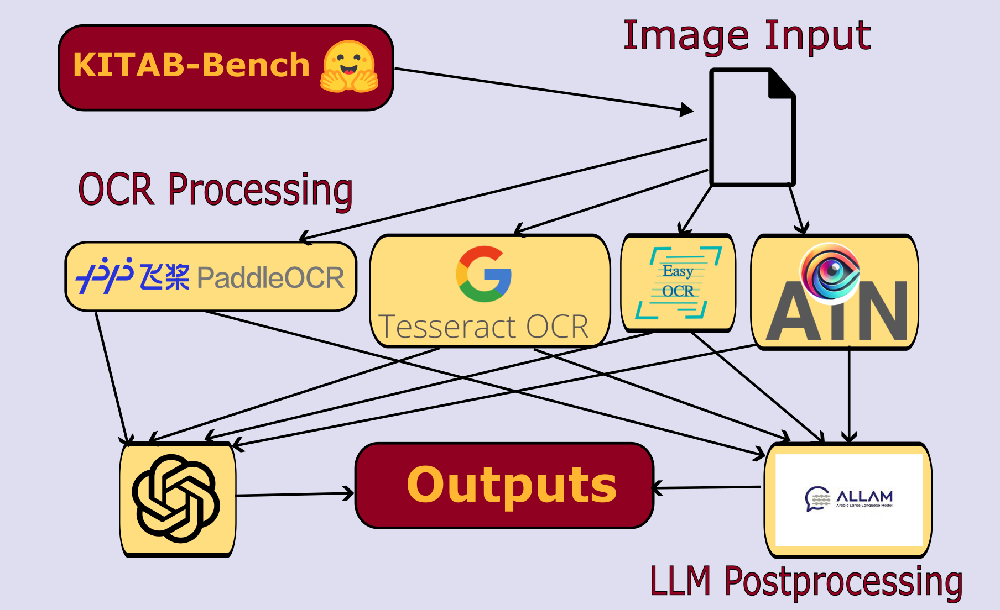

Optical Character Recognition (OCR) remains inconsistent for complex scripts, particularly handwritten Arabic. Our project, Righting Writing, constructs a pipeline that integrates OCR with Large Language Models (LLMs) for output correction. Using the KITAB-Bench dataset and four OCR systems (EasyOCR, PaddleOCR, Tesseract, and AIN-7B), outputs were passed through ChatGPT-4o and ALLam-7B for refinement. Results show LLMs significantly reduce Word and Character Error Rates, especially when contextual information is rich. This demonstrates a viable multilingual approach to document comprehension and an efficient alternative to state-of-the-art vision-language models.

What was the objective, and what problem were you addressing?
Optical Character Recognition (OCR) is a valuable tool for digitizing text, but its capabilities are often limited. Righting Writing refines the frequently imperfect OCR output using Large Language Models to produce text that more accurately reflects the original content.
What are the current methods, and what limitations do they have?
Current OCR systems work by identifying individual characters in scanned images. However, they often struggle with complex handwriting and poor image quality. While Vision-Language Models (VLMs) offer promise, they are computationally demanding.
Why does this matter?
Developing models that can reliably interpret handwritten documents could reduce the need for manual transcription. If an OCR-to-LLM pipeline proves effective, it could serve as a more accessible alternative to VLMs for accurate and efficient document processing.
What did you do, and why?
We utilized the KITAB-Bench dataset, which contains scanned Arabic texts, processed by four OCR systems: EasyOCR, PaddleOCR, Tesseract, and AIN-7B. We then refined the outputs using ChatGPT-4o and ALLam-7B. Accuracy was evaluated using Word Error Rate (WER), Character Error Rate (CER), and BERTScore. We hypothesized that LLMs could leverage context to correct OCR errors effectively.
What challenges were expected or encountered?
A key concern was locating accurate models and data for Arabic OCR. Fortunately, suitable tools were found. However, some ground-truth texts contained their own errors. LLMs often "corrected" these, leading to increased divergence despite semantic improvement. This revealed a tradeoff between literal accuracy and text clarity.
How was success measured, and what were the outcomes?
Evaluation relied on WER, CER, and BERTScore. Improvements were most evident with ChatGPT-4o, which decreased WER by 8–10% on average for mid-range baseline scores. ALLam-7B underperformed due to its limited instruction-following capability. Documents with very low or very high WER were more difficult to improve.
Average change in Word Error Rate across baseline categories. Points above the red line indicate improvements.
Our pipeline performed best on long-form subdatasets like hindawi, historicalbooks, and patsocr, where ample context aided correction. In contrast, single-word datasets such as evarest and adab showed minimal improvement. BERTScore gains confirmed that semantic content was well-preserved during LLM post-processing.
Documents from longer subdatasets showed higher gains across WER and BERTScore. Short or one-word documents provided too little context for meaningful correction.
Figure 4 illustrates document improvement rates across different baseline WER brackets. The pipeline yielded the most consistent improvements in documents with 20–80% baseline WER. Documents outside this range were either too noisy or already near optimal, limiting gains.
Improvement distribution by initial WER range. Peak performance occurred in the mid-range (20–80%).
Compared to Qwen2-VL—a strong vision-language model—the OCR + LLM pipeline delivered comparable or superior results. This indicates that our approach is a valid, computationally cost-effective alternative for Arabic document processing.
This project demonstrates that integrating OCR with LLM post-processing can improve text accuracy in multilingual contexts. While promising, the pipeline has room for refinement.
Future work should include fine-tuning LLMs on OCR-specific outputs to better handle noisy or historically inconsistent text. This could help retain stylistic features present in ground-truth documents.
Additionally, incorporating OCR confidence scores or top-k predictions could allow LLMs to make better-informed corrections using masked language modeling to fill in text with high contextual accuracy.
In conclusion, the synergy between OCR systems and LLMs offers a compelling framework for document digitization. As these technologies mature, automated reading of complex texts will become more accurate, scalable, and accessible.